ENG3014 · Communication Systems
Scroll
Part 1
Introduction to communications
Communication waveforms are time-varying signals. The ability to communicate at a high datarate basically requires a higher frequency of transmission.
In frequency domain, one sine wave is one line: its position is , its height is .
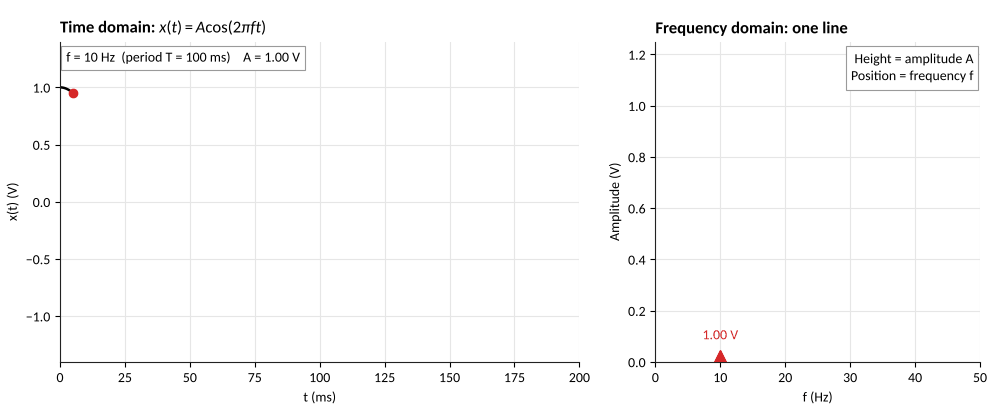
Non continuous changes in signals, e.g. a switch from 0 to 1, cannot be described by a finite number of sin functions, and are instead approximated.
Faster data, wider spectrum.
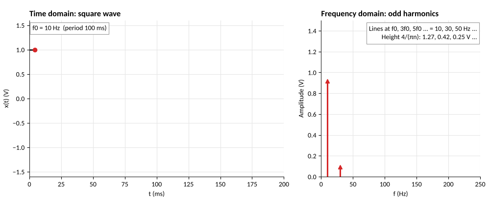
Fourier transform probes for each frequency
Multiply by a probe at and average: the result is large only if is in the signal.
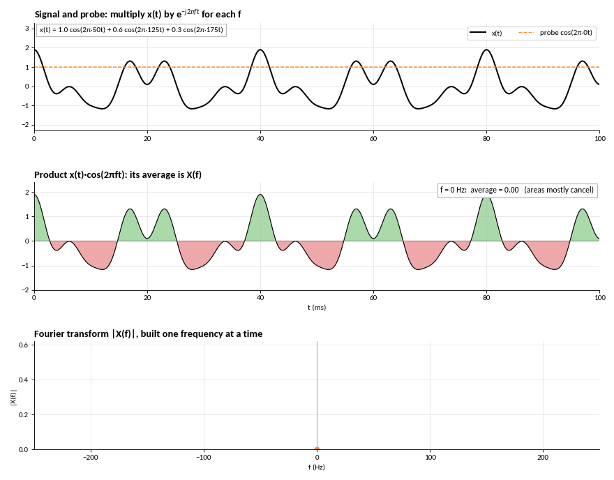
Part 2
Wireless Carriers and Modulation
Modulating a carrier's amplitude using a message (a time-varying signal) adds positive and negative sidebands
A 400 Hz carrier and a 10 Hz message: lines at 390, 400 and 410 Hz.
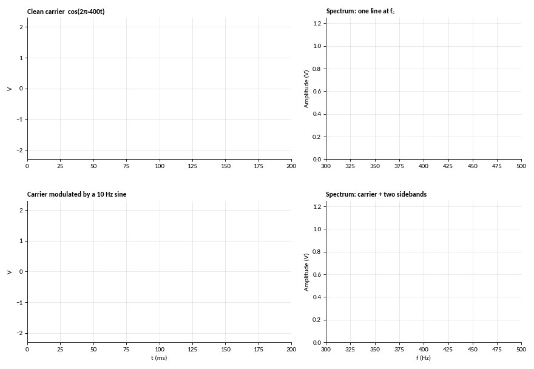
Modulated signals encode their information in the sidebands
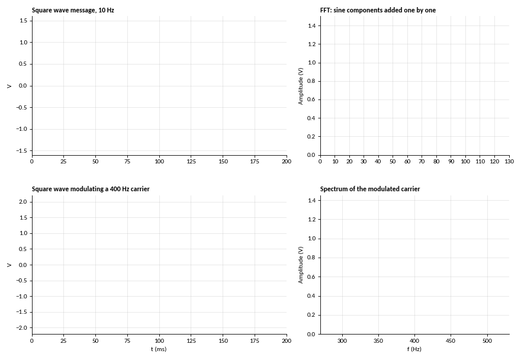
Modulation is DC-offset - for analogue AM, the amplitude is the time-varying data waveform
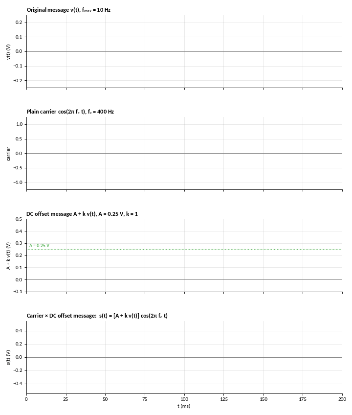
When demodulating AM, the envelope recovers the lower frequency information waveform
Above 1, the envelope crosses zero: over-modulation.
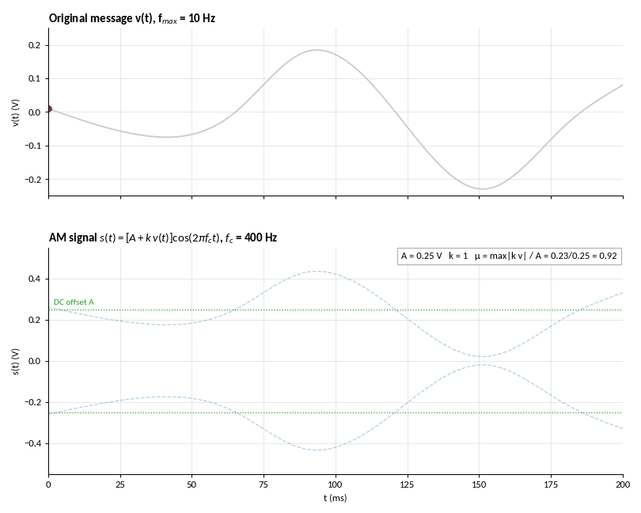
Continuous FM modulates the frequency - this, however, is done by controlling the phase of the carrier
The second line is for a tone, , with . Constant amplitude, many sidebands. Carson: .
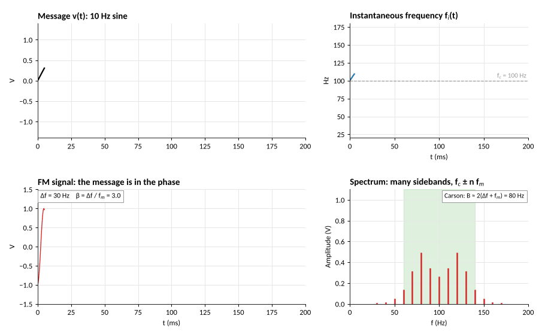
As most information to be transmitted is digital, bits can be encoded as discrete frequencies, i.e. Frequency Shift Keying (FSK)
, and for bit rate .
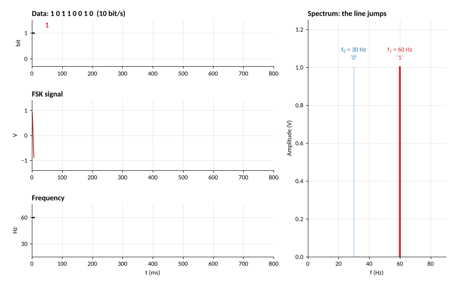
Part 3
Practical Hardware: Oscillator Phase Noise
A real oscillator is not a perfect line, there is jitter in its oscillation cycles. Jitter appears as a random shift in frequency with a lower magnitude
Measured in dBc/Hz.
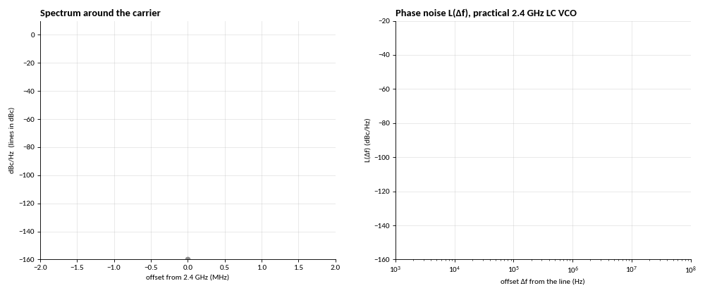
Such jitter transfers to the modulated signal; the sidebands inherit the carrier's phase noise
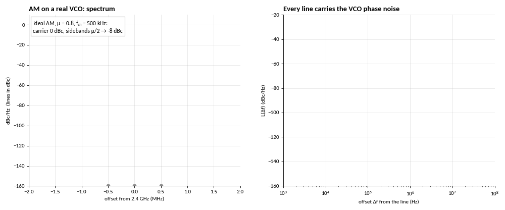
Part 4
Wireless channels
Radiated electromagnetic power spreads over a growing sphere around the TX antenna
−6 dB every time the distance doubles.
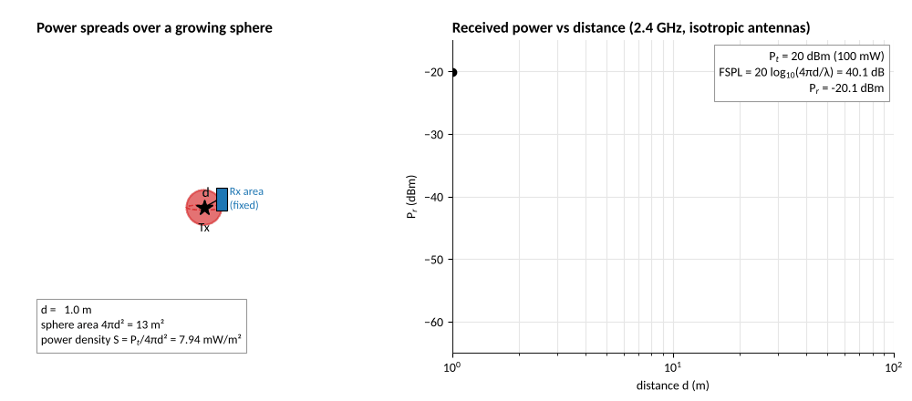
Over ground, reflection causes periodic changes
Direct and reflected waves add and cancel up close, then −40 dB per decade beyond .
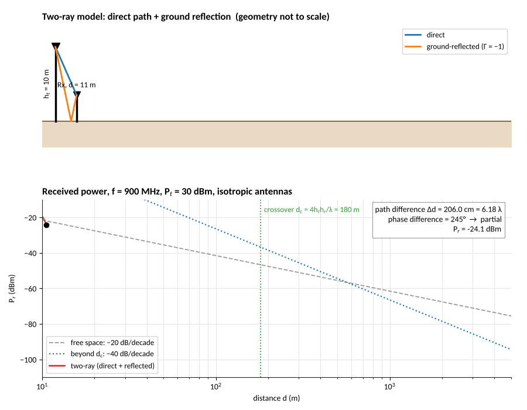
Motion shifts the frequency: Doppler and Fading
Approaching: higher. Receding: lower. A car at 30 m/s shifts 2.4 GHz by 240 Hz.
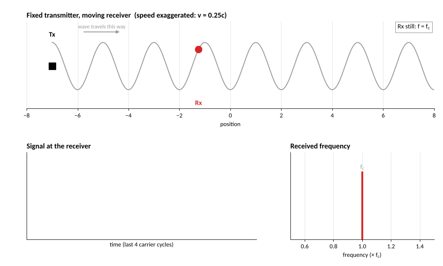